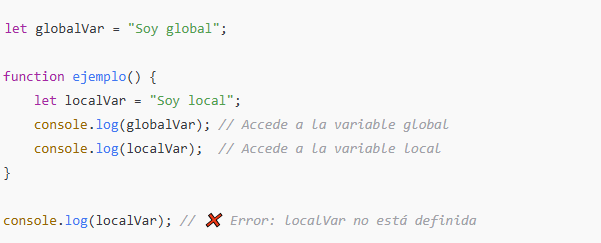
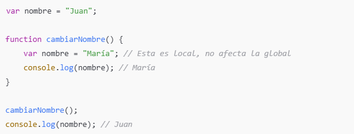
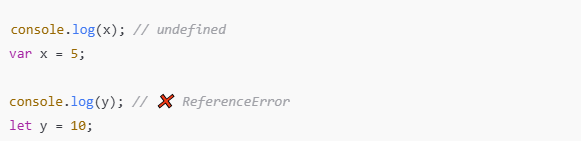
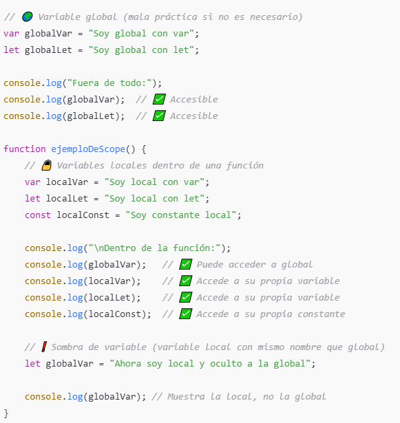
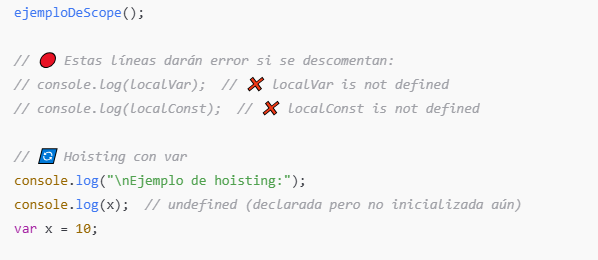
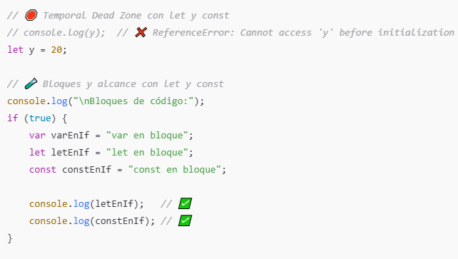
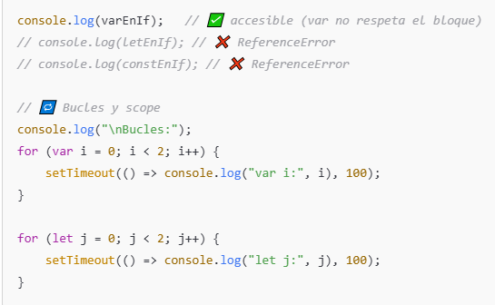

🔹 1. Ámbito de las variables (Scope)
-
Globales: Se definen fuera de cualquier función o bloque. Están disponibles en todo el programa.
-
Locales: Se definen dentro de una función o bloque. Solo existen y son accesibles dentro de ese bloque.

🔹 2. Riesgo de colisiones de nombres
Las variables globales pueden sobrescribirse fácilmente si no se gestionan bien.

🔹 3. Contaminación del espacio global
Evitar declarar muchas variables globales, ya que:
-
Puede producir conflictos con otras bibliotecas.
-
Dificulta la depuración.
🟨 Recomendación: Encapsula tu código en funciones o utiliza módulos para evitar esto.
🔹 4. Diferencias entre var, let y const
| Tipo | Scope | Puede redefinirse | Puede reasignarse |
|---|---|---|---|
var |
Función o global | ✅ | ✅ |
let |
Bloque | ❌ | ✅ |
const |
Bloque | ❌ | ❌ |
🔸 Usar let y const es más seguro y moderno que var.
🔹 5. Hoisting (Elevación)
-
Las declaraciones con
varse elevan al inicio del scope, pero su valor no. -
letyconsttambién se elevan, pero no pueden usarse antes de su declaración (zona muerta temporal).

Ejemplos:




📌 Cosas que podés observar en este ejemplo:
-
varse eleva y puede dar lugar a comportamientos inesperados. -
letyconstrespetan los bloques (if,for, etc.), lo que ayuda a evitar errores. -
Variables locales pueden “ocultar” variables globales si tienen el mismo nombre (shadowing).
-
En bucles,
varcomparte la misma variable, mientras queletcrea una nueva por iteración (clave consetTimeout). -
Intentar acceder a
letoconstantes de su declaración da un error (Temporal Dead Zone).